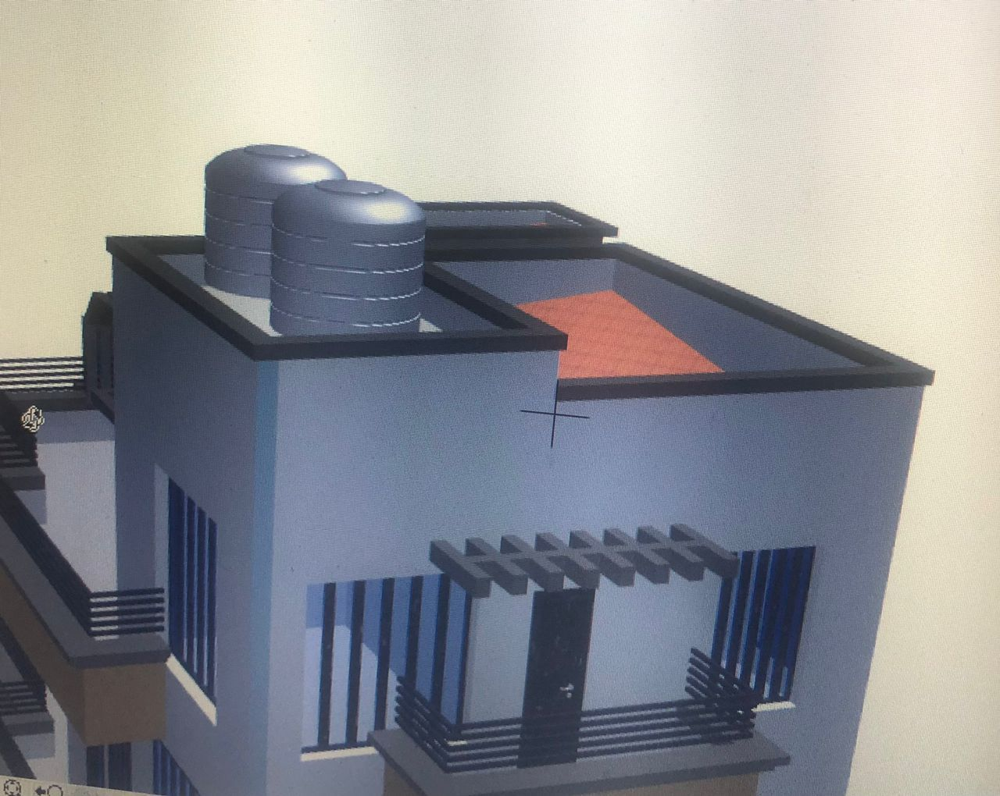

Construction d'un forrage d'approvisionnement en eau potable
Kinshasa, 2022
Mise en place des fondations d'un batiment à usage domestique
Goma, 2021
Conception et mise en place des Systèmes photovoltaiques
Partout en RDC
Préservez la solidité de vos fondations grâce à nos puits perdus bien conçus
Une solution durable pour une évacuation efficace des eaux et un terrain toujours sain
Chez Congo Building Services, nos ingénieurs sont constamment sur le terrain
Pour garantir un suivi rigoureux, une exécution sans faille et une qualité irréprochable à chaque étape de vos projets.
Nos installations offrent un confort aux clients
Kinshasa, 2024
Renovation des puits perdus afin d'assurer une bonne geestion des eaux usées
Kinshasa, 2022

Conception architecturale
Notre équipe d’architectes conçoit des bâtiments élégants, fonctionnels et adaptés à leur environnement.
Batiment R+2
Kinshasa, 2022
Ferraillage des dalles avec nos ingénieurs sur terrain pour inspecter
Controle minutieux du ferrallaige pour assurer la resistance de la structure
Controle de l'harmonie entre les plans de coffrage,de fondations avec l'execution sur terrain
Afin d'eviter des incohérences sur terrain
Finition des batiments dans les délais impartis
Projet réalisé avec promptitude avec une main d'oeuvre des spécialistes